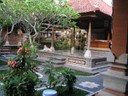
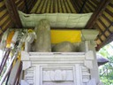
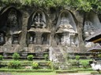
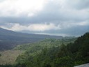
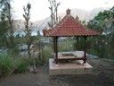
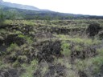
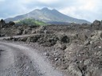

Resor · 2010-10-14 @ 13:51:33 Allmänt Permalink
Ner i vulkanen
Vaknar i Ubud. Nån spelar trumma kl 6. Kollektiv väckning?
Men det gör inget för hundarna slogs på natten och sen en timme gal 2 tuppar i kapp med en duva. Vaken? Jajamensan. Men det är perfekt, eftersom jag lägger mig tidigt pga mörkret. Efter 6 finns inget att se, bara barer att sitta på och det, ja, varför?
Rullar norrut, och jag borde ju se något av det som tipsas om.
Generellt sett så är jag inte så himla "på" på alla gamla fornlämningar. Jag är lite mer intresserad av de som lever där nu, även om en viss förståelse av deras historia är bra att ha. Jag menar, som Florens, det är ju ett muséum, folk lever kvar i 1400 talet! Egypten och alla dessa anch-kors, de har inte den religionen längre (vilket väl är för den var ju lite creepy) men de håller kvar kulturen som fanns för 5000 år sen och slår dank på den. Fransoserna har katedraler och slott. Turisterna får ett ställe nära att bo på så vi kan se allt det där, men vi missar lätt det nuvarande. Hur har Bali det med vattenförsörjningen, sop och avloppshantering, utbildning mm. Eller deras relation till Indonesien, och i synnerhet Java?
Längs vägen står kvinnor och tvättar kläder. I diket utanför huset vid gatan. Och jag ska komma ihåg att lämna in tvätten högt upp på gatan, för de tvättar i samma vatten en efter en på väg upp.
På dukar utanför husen ligger ris på tork. Undrar om odlarna här märker av världspriserna när regnet förstört skörden i Kina?
Blir inviftad på en parkering och får lägga en liten P-avgift. Sen börjar golgatavandringen förbi alla stånden. Saris, smycken, träskulpturer. Men ett väldigt fint lapptäcke stannade jag och tittade på, eftersom mamma sydde såna och det var i hennes stil.
Entré, kolla rutin nu då, jag tar fram byxor! Och slipper hyra nåt som täcker benen :-)
Köper biljett och går till entrén. Scarf krävs! Men va f-n, jag har helbyxor! Nä, scarf måste man ha, man får låna, men bör donera pengar. En liten blå runt midjan räcker. E d inte de ena så…
Trappor ner till floden, långt. Och jag har min packning med mig, och hela vägen månglare i templet som ropar. Vid floden är det stenstoder och tempel utkarvat ur bergen, som kungen gjort med naglarna eller nåt runt 1300.
Rätt ok, nån visar in mig i litet urkarvat hus där man tar av skorna och där inne säger nån "Nice suit for You Mister, I make good price!"
Nej, hallucination, förlåt. Det är en gravplats.
Andra trappor upp, 50 cm höga, håller på att få bråck och stannar. Runt templet, i templet, i floden, ja.. överallt är det sophögar. Som längs alla vägar. Kan ingen säga att vi turister inte gillar det. Vårda er födkrok!
Så skönt att komma upp och få rulla och svalka igen, tillsammans med dagens dos av sot och avgaser.
Mot berget. Det börjar glesa ur närmare Penelokan och snart kommer vyn, wow! Och en poliskontroll. Men jag har internationellt körkort, hjälm på och knäppt och papper på moppen å allt är klart och jag får åka. De var mycket korrekta och trevliga! Moppen/Scootern eller vad det nu är visar sig vara på 110cc, vilket förklarar att den snällt bär mig uppför en del väldigt branta partier utan att tveka.
En 5.000 entréavgift till Penelokan och "Gunung Baturområdet" betalas vid en vägkorsning. Och en kvinna klämmer fast en lite grej på moppen och trycker ris i pannan på mig och tycker det är värt 10.000:- Som jag tycker det är lite fräckt att leverera en obeställd tjänst fick hon 5.
http://www.youtube.com/watch?v=sgr9sG6M53Y
Personalen småsnackar lite om hur det är att bo där, trevligt.
Nedanför syns det svarta lava området från de senate utbrotten, den är som flera kratrar i en, som har ett fint geologiskt namn. Double Caldera (Ja jag slog upp det), och sen rullar jag neråt på den sjukt branta slingriga vägen.
Jag stannar till ner mot sjön, njuter av utsikten. Här är det annorlunda, husen täcker inte allt, en man på scooter ursäktar sig och vill visa sitt nybyggda hus för uthyrning, jag säger att min budget är 100.000, om det är ok. Jag hänger på honom. Genom Toya Bungkah, upp bland grönsaksfälten, genom ett dike och uppför en jordvall, jösses. Men där ligger det sötaste lilla tvårumshuset!
http://www.youtube.com/watch?v=TGzlf1xVPUk
Och rummet har väst-toa! Fast aldrig toapapper så klart, det har man själv.
Sen tänker jag kolla runt, det går en väg runt vulkantoppen, på den gamla kraterbotten. Jag kör iväg och snart slås jag åter av ett sånt där "Ha!" Jag var förberedd! För regnet kommer, och jag tar på ponchon (köpt i ösregn på väg från Bollnäs på OKQ8 med MC,) som är med och kör vidare. Jag är varnad för att Balineser inte gillar regn och kör ännu värre då…
Genom byar som verkar mer ovana med besök, folk tittar här, barn vinkar och ropar "Hello, Money", Så, nåja.
Längre in och bort runt berget blir vägen sämre, och sämre… sakta blir det mer som trike. Vatten på vägen, det kan ju vara hur djupt som helst! Men en snubbe vinkar att det bara är att köra, så full gas och står på scootern lite bakåtlutad, sladdar jag genom ler/vattenhålet och kommer upp torrskodd.
Jag stannar till vid en shop, alla hus verkar sälja lite grejjer. Tar en cola och pratar så gott det går. No tourists. Only Bali. Ja, lite off är det ju. Vidare.. värre och värre.. men vad har jag gett mig in på? "Bad but passable" säger LP. "Nja" säger jag.
Ett gäng har en kanske 5årig tjej som kör sitt "Hello, money" Jag har stannat för att sträcka på benen. Hon behöver glasögon tror jag. Jag säger money for work! Det är ju inte bra att tigga. Det skadar barn tror jag. Nånstans läste jag det om barnhem, "kom inte med presenter hur som helst för de tappar självaktningen".
I alla fall erbjuder jag henne 1.000 ( knappt 1 kr).
Men hon tittar bara på resten av pengarna i handen och tar inte den jag håller fram. Ja då kan det va. Slipad tjej. Mamman ropar "Sorry mister".
Mitt i lavafältet finns ett tempel med stora gamla träd som klarat sig. Det kallas "Lucky tempel"
Ut ur lavan på vägen och hem. Tittar in på turistbyrån, men jag har boende, och ska inte till varma källbad eller vandra i berg… Men var lite sällskapssjuk bara. Dom var trevliga och fick dit mig att äta middag.
Här är det fint. Jag har ju saknat bilden av Bali jag hade, grönska och vita sandstränder. Det är ju inte så mycket sånt. Stränderna är mest vulkaniska och oftast ser man inte grönskan. Men risfälten är verkligen gröna, och här i kratern odlas grönsaker.
Miljögrej! I Sverige pressar vi vårt miljötänkande, och det är ju bra. Vi ska definitivt ha en hård lagstiftning. Men när vi ska investera pengar, var gör dom bäst nytta med tanke på att miljöproblemen är globala. Sot från förbränning lägger sig på isen vid pooler och glaciärer och de värms och smälter.
1 kr miljöteknik i sverige ger inte ens i närheten av vad 1 kr gör i såna här länder. Varenda lastbil och buss spyr ut tjock rök. Eller kan vi anställa en jurist på Costa Rica som lobbar mot hajfensfiske på Cocosöarna?
Hem i ett moln av insekter nere i byn. Vid stugan är det lugnt och jag sover gott. Det har flyttat in några i det andra rummet, det är så lyhört så jag tittar efter ibland om de kommit in i mitt rum!
Jag hör dem gå vid 3, de ska upp på berget för att se soluppgången.
Vid sex ligger jag och tittar ut, vid sängen är skyltfönster mot sjön och bergen. Så vackert!! Och solen bryter upp över bergkammen. Det kommer pankaka och kaffe och jag pratar lite till med ägaren. Han är verkligen trevlig, han säger att västerländska vänner har lärt honom hur man ska vara mot turister, rak och ärlig. Så rätt! Jag önskar honom lycka till och han heter "Made Jack" tel. 081 936 236 345 i Toya Bungkah, kratern. De lever i en aktiv vulkan de tokarna! Det skakar och ryker ibland…
Jag kollade ett kontoutdrag, jag har tänkt 1 kr på 1000 rupier, men det är 0,8. Så rummet kostar 80kr och man äter en stadig Nasi för 16kr
Men det gör inget för hundarna slogs på natten och sen en timme gal 2 tuppar i kapp med en duva. Vaken? Jajamensan. Men det är perfekt, eftersom jag lägger mig tidigt pga mörkret. Efter 6 finns inget att se, bara barer att sitta på och det, ja, varför?


Packar ihop och får frukost på altan, är lite myggbiten på armarna. frukttallrik och rostat bröd med.. nåt smetigt gott. Hunden ligger och trynar på det stora familjealtaret mitt på gården med en stoor säng på.Rullar norrut, och jag borde ju se något av det som tipsas om.
Generellt sett så är jag inte så himla "på" på alla gamla fornlämningar. Jag är lite mer intresserad av de som lever där nu, även om en viss förståelse av deras historia är bra att ha. Jag menar, som Florens, det är ju ett muséum, folk lever kvar i 1400 talet! Egypten och alla dessa anch-kors, de har inte den religionen längre (vilket väl är för den var ju lite creepy) men de håller kvar kulturen som fanns för 5000 år sen och slår dank på den. Fransoserna har katedraler och slott. Turisterna får ett ställe nära att bo på så vi kan se allt det där, men vi missar lätt det nuvarande. Hur har Bali det med vattenförsörjningen, sop och avloppshantering, utbildning mm. Eller deras relation till Indonesien, och i synnerhet Java?


Men ett tempel som heter "Pura Pusering Jagat" stannar jag vid. Öde, så när som på en man som rensar gräs i ena hörnet. Som allt här är det stenstoder och murar och små altare. Ett altare är för fruktbarhet, nygifta går hit för att få det. En snopp o en murvla helt enkelt på altaret! I ett land där de kollar efter porr i tullen. Kul! Men det är olika saker, jag vet. På vägen ut gnisslar järngrinden och en kille kommer lubbande, jag mörkar och säger att jag inte vill se templet och drar.Längs vägen står kvinnor och tvättar kläder. I diket utanför huset vid gatan. Och jag ska komma ihåg att lämna in tvätten högt upp på gatan, för de tvättar i samma vatten en efter en på väg upp.
På dukar utanför husen ligger ris på tork. Undrar om odlarna här märker av världspriserna när regnet förstört skörden i Kina?


Vägarna för uppåt och norrut, dåligt skyltat men känner mig fram till "Gunung Kawi" som är med på UNESCO's världsarvslista och sånt är ju alltid intressant.Blir inviftad på en parkering och får lägga en liten P-avgift. Sen börjar golgatavandringen förbi alla stånden. Saris, smycken, träskulpturer. Men ett väldigt fint lapptäcke stannade jag och tittade på, eftersom mamma sydde såna och det var i hennes stil.
Entré, kolla rutin nu då, jag tar fram byxor! Och slipper hyra nåt som täcker benen :-)
Köper biljett och går till entrén. Scarf krävs! Men va f-n, jag har helbyxor! Nä, scarf måste man ha, man får låna, men bör donera pengar. En liten blå runt midjan räcker. E d inte de ena så…
Trappor ner till floden, långt. Och jag har min packning med mig, och hela vägen månglare i templet som ropar. Vid floden är det stenstoder och tempel utkarvat ur bergen, som kungen gjort med naglarna eller nåt runt 1300.
Rätt ok, nån visar in mig i litet urkarvat hus där man tar av skorna och där inne säger nån "Nice suit for You Mister, I make good price!"
Nej, hallucination, förlåt. Det är en gravplats.
Andra trappor upp, 50 cm höga, håller på att få bråck och stannar. Runt templet, i templet, i floden, ja.. överallt är det sophögar. Som längs alla vägar. Kan ingen säga att vi turister inte gillar det. Vårda er födkrok!
Så skönt att komma upp och få rulla och svalka igen, tillsammans med dagens dos av sot och avgaser.
Mot berget. Det börjar glesa ur närmare Penelokan och snart kommer vyn, wow! Och en poliskontroll. Men jag har internationellt körkort, hjälm på och knäppt och papper på moppen å allt är klart och jag får åka. De var mycket korrekta och trevliga! Moppen/Scootern eller vad det nu är visar sig vara på 110cc, vilket förklarar att den snällt bär mig uppför en del väldigt branta partier utan att tveka.
En 5.000 entréavgift till Penelokan och "Gunung Baturområdet" betalas vid en vägkorsning. Och en kvinna klämmer fast en lite grej på moppen och trycker ris i pannan på mig och tycker det är värt 10.000:- Som jag tycker det är lite fräckt att leverera en obeställd tjänst fick hon 5.


Vägen går på den äldsta kraterns kant, med utsikt åt båda håll. Det är verkligen fint! Jag går in och äter på ett tomt ställe, jag har knäckt det där med att höna är "Gåläng" och ris "Nasi". Se där ja, Nasi Goreng.http://www.youtube.com/watch?v=sgr9sG6M53Y
Personalen småsnackar lite om hur det är att bo där, trevligt.
Nedanför syns det svarta lava området från de senate utbrotten, den är som flera kratrar i en, som har ett fint geologiskt namn. Double Caldera (Ja jag slog upp det), och sen rullar jag neråt på den sjukt branta slingriga vägen.
Jag stannar till ner mot sjön, njuter av utsikten. Här är det annorlunda, husen täcker inte allt, en man på scooter ursäktar sig och vill visa sitt nybyggda hus för uthyrning, jag säger att min budget är 100.000, om det är ok. Jag hänger på honom. Genom Toya Bungkah, upp bland grönsaksfälten, genom ett dike och uppför en jordvall, jösses. Men där ligger det sötaste lilla tvårumshuset!
http://www.youtube.com/watch?v=TGzlf1xVPUk


Han har gjort fint! och det är ett stort rum med badrum. Vi sitter i sittgrejjen på den lilla gården och pratar, om Internet och LP och hur turister hittar ställen. Sen säger han, tack för att du foljde med, I dont want to hassle You, if you like it ok, if not that's ok. Självklart stannar jag! Jag är hans 5:e gäst bara :-)Och rummet har väst-toa! Fast aldrig toapapper så klart, det har man själv.
Sen tänker jag kolla runt, det går en väg runt vulkantoppen, på den gamla kraterbotten. Jag kör iväg och snart slås jag åter av ett sånt där "Ha!" Jag var förberedd! För regnet kommer, och jag tar på ponchon (köpt i ösregn på väg från Bollnäs på OKQ8 med MC,) som är med och kör vidare. Jag är varnad för att Balineser inte gillar regn och kör ännu värre då…
Genom byar som verkar mer ovana med besök, folk tittar här, barn vinkar och ropar "Hello, Money", Så, nåja.
Längre in och bort runt berget blir vägen sämre, och sämre… sakta blir det mer som trike. Vatten på vägen, det kan ju vara hur djupt som helst! Men en snubbe vinkar att det bara är att köra, så full gas och står på scootern lite bakåtlutad, sladdar jag genom ler/vattenhålet och kommer upp torrskodd.
Jag stannar till vid en shop, alla hus verkar sälja lite grejjer. Tar en cola och pratar så gott det går. No tourists. Only Bali. Ja, lite off är det ju. Vidare.. värre och värre.. men vad har jag gett mig in på? "Bad but passable" säger LP. "Nja" säger jag.




Så kommer jag ut på lavafältet jag sett tidigare. Här plockar folk sten, barn, kvinnor o gamla. De läggs på lastbilar som kämpar sig ut. Nu är det hit och dit på vägbanan för att inte bli hängande på stenarna. Riktigt illa. Allt är svart sten, länge, oftast öde. Vägen slingrar och jag har ingen aning, soppan är låg. Lite läskigt. Men ett par ledtrådar från förvånade människor som sitter och väntar på nästa lastbil gör att jag fortsätter.Ett gäng har en kanske 5årig tjej som kör sitt "Hello, money" Jag har stannat för att sträcka på benen. Hon behöver glasögon tror jag. Jag säger money for work! Det är ju inte bra att tigga. Det skadar barn tror jag. Nånstans läste jag det om barnhem, "kom inte med presenter hur som helst för de tappar självaktningen".
I alla fall erbjuder jag henne 1.000 ( knappt 1 kr).
Men hon tittar bara på resten av pengarna i handen och tar inte den jag håller fram. Ja då kan det va. Slipad tjej. Mamman ropar "Sorry mister".
Mitt i lavafältet finns ett tempel med stora gamla träd som klarat sig. Det kallas "Lucky tempel"
Ut ur lavan på vägen och hem. Tittar in på turistbyrån, men jag har boende, och ska inte till varma källbad eller vandra i berg… Men var lite sällskapssjuk bara. Dom var trevliga och fick dit mig att äta middag.
Här är det fint. Jag har ju saknat bilden av Bali jag hade, grönska och vita sandstränder. Det är ju inte så mycket sånt. Stränderna är mest vulkaniska och oftast ser man inte grönskan. Men risfälten är verkligen gröna, och här i kratern odlas grönsaker.
Miljögrej! I Sverige pressar vi vårt miljötänkande, och det är ju bra. Vi ska definitivt ha en hård lagstiftning. Men när vi ska investera pengar, var gör dom bäst nytta med tanke på att miljöproblemen är globala. Sot från förbränning lägger sig på isen vid pooler och glaciärer och de värms och smälter.
1 kr miljöteknik i sverige ger inte ens i närheten av vad 1 kr gör i såna här länder. Varenda lastbil och buss spyr ut tjock rök. Eller kan vi anställa en jurist på Costa Rica som lobbar mot hajfensfiske på Cocosöarna?
Hem i ett moln av insekter nere i byn. Vid stugan är det lugnt och jag sover gott. Det har flyttat in några i det andra rummet, det är så lyhört så jag tittar efter ibland om de kommit in i mitt rum!
Jag hör dem gå vid 3, de ska upp på berget för att se soluppgången.
Vid sex ligger jag och tittar ut, vid sängen är skyltfönster mot sjön och bergen. Så vackert!! Och solen bryter upp över bergkammen. Det kommer pankaka och kaffe och jag pratar lite till med ägaren. Han är verkligen trevlig, han säger att västerländska vänner har lärt honom hur man ska vara mot turister, rak och ärlig. Så rätt! Jag önskar honom lycka till och han heter "Made Jack" tel. 081 936 236 345 i Toya Bungkah, kratern. De lever i en aktiv vulkan de tokarna! Det skakar och ryker ibland…
Jag kollade ett kontoutdrag, jag har tänkt 1 kr på 1000 rupier, men det är 0,8. Så rummet kostar 80kr och man äter en stadig Nasi för 16kr